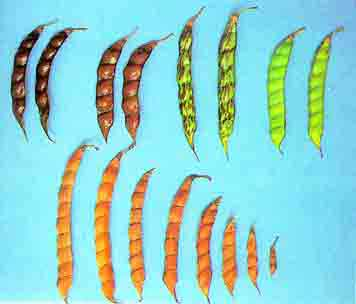

| Home |
| RED GRAM |
MAJOR DISEASES |
| 1. Wilt |
| 2. Dry root rot |
| 3. Powdery mildew |
| 4. Stem blight |
| 6. Sterility Mosaic Disease |
MINOR DISEASES |
| 1. Seedling blight |
| 2. Brown blotch |
| 3. Anthracnose |
| 4. Stem rot |
| 5. Leaf spot |
| 6. Halo blight |
| Questions |
| Download Notes |
RED GRAM :: MAJOR DISEASE :: BROWN BLOTCH
Brown blotch - Colletrtrichum capsici
Purple brown discolouration occurs mainly on pods but also on petioles, leaf veins, stems and peduncles. Pods become distorted and have black fruiting bodies.
|  |